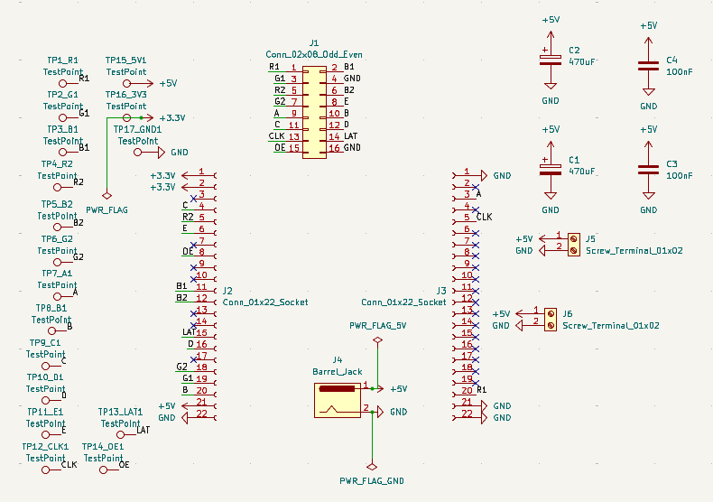

// the display in its natural habitat: clock, weather, stocks, Spotify now-playing, Todoist tasks
What it is
A Wi-Fi desk dashboard on a 128×32 RGB LED matrix that shows everything I'd otherwise check my phone for:
- Spotify now-playing — album-synced info with scrolling track/artist text and a live progress bar
- Weather via Open-Meteo — icon, temperature, condition
- Todoist tasks with due dates, scrolling
- Stock ticker via Finnhub — price change with up/down arrows
- Clock + date, NTP-synced with automatic DST
- Idle mode — a custom animated aurora with a twinkling starfield when nothing is playing
Architecture
The interesting constraint: HUB75 panels have no memory. The MCU must continuously scan pixel data to the panels, so the render loop can never be blocked by a slow network call. The design splits work across the ESP32's two cores:
spotifyTask ─┐ ┌─> clock/date zone
weatherTask ─┤ mutex-guarded ├─> weather zone
todoTask ─┼─> shared state ───>──┼─> Spotify zone (progress + scroll)
stockTask ─┘ (core 0) ├─> tasks / stocks zone
└─> aurora idle screen
render loop (core 1)
Each API gets its own FreeRTOS task pinned to core 0. Shared state uses two mutexes — one for data, one for HTTP, because the TLS client can't handle concurrent requests. Rendering is dirty-region based: each zone repaints only when its data changes, which eliminates flicker.
Because a desk gadget that needs daily reboots is a failed desk gadget, there's a self-healing watchdog stack: Wi-Fi auto-reconnect, stale TLS connection reset, and a full ESP.restart() if no network call has succeeded in 15 minutes.
The hard parts
Everything above worked on the second try. These did not:
Sagging supply rails
Bright full-white frames browned out the panels — the supply couldn't hold 5V under peak current draw. Diagnosed the sag, learned to budget for worst-case (not typical) panel current, and resized the power path.
The burned-out barrel connector
The stock barrel connector quietly cooked itself carrying sustained panel current. Lesson learned about connector current ratings; replaced with screw terminals sized for the job — a decision carried into the PCB design.
Signal integrity on jumper wires
Random glitched pixels traced back to the rat's nest of jumpers carrying fast HUB75 clock and data lines. Shortening and re-routing helped; the real fix was designing a proper board.

// the prototype wiring that motivated the PCB. every embedded engineer has this photo.
The PCB
My first custom board — designed in KiCad, fabricated by JLCPCB. ESP32 socket headers, HUB75 output header, screw-terminal power input with bulk decoupling (2× 470 µF electrolytic + 100 nF ceramics), a barrel-jack option, and 17 labeled test points so bring-up is a multimeter session instead of a guessing game.



// layout, 3D render, and schematic. board is in transit from the fab — assembly photos coming.